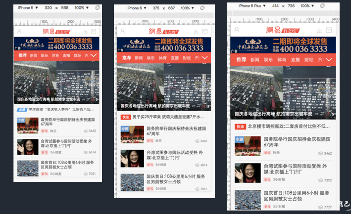

中间每条招聘信息不管分辨率怎么变，招聘公司的图标等信息 都位于条目的左边，薪资都位于右边.
特点：关键元素高宽和位置都不变，只有容器元素在做伸缩变换。对于这类app，记住一个开发原则就好：文字流式，控件弹性，图片等比缩放

移动端布局，目前主要是针对于手机端上面的页面布局开发
弹性布局(100%布局)——拉勾网、天猫首页
等比缩放布局(rem布局)—网易、淘宝首页
弹性布局（100%布局）案例
等比缩放布局（rem布局）
混合布局案例
不管分辨率怎么变顶部与底部的bar，它的高度度和位置都不变；
中间每条招聘信息不管分辨率怎么变，招聘公司的图标等信息 都位于条目的左边，薪资都位于右边.
特点：关键元素高宽和位置都不变，只有容器元素在做伸缩变换。对于这类app，记住一个开发原则就好：文字流式，控件弹性，图片等比缩放
等比缩放布局的特点：页面里边的元素会根据分辨率等比例放大或缩小.
1.rem是什么?
rem(font size of the root element)是指相对于根元素的字体大小的倍数。
2.为什么web app要使用rem？
实现强大的屏幕适配布局(淘宝,腾讯,网易等网站都是rem布局适配)rem能等比例适配所有屏幕,根据变化html的字体大小来控制rem的大小。
3.rem是根元素（html）的font-size的倍数。
vw：viewport width，视窗宽度，1vw等于视窗宽度的1%。
vh：viewport height，视窗高度，1vh等于视窗高度的1%。
问题1：如何实现页面中出现一个正方形
回答：width:10vw;height:10vw;（提示：宽度高度使用同样的单位即可）
问题1：元素:width:100%和元素：width:100vw实现效果是否一致
回答：不一致；如果页面没有纵向滚动条的话，二者是西安效果一致；如果有纵向滚动条的话则有区别了因为width:100vw带有滚动条；宽度100%则不带有
1.rem
rem是指相对于根元素的字体大小的单位。
2.根元素
如果根元素是相对设备尺寸自动变换。
3.VW
视窗宽度，1vw等于视窗宽度的1%。
4.VW转换成PX赋值给font-size
例：设备的分辨率为640*1136，逻辑像素为320*568 1VW=3.2px
Font-size:100px;转换成VW font-size:31.25vw;
1rem=31.25vw可一起结合写等比例缩放布局。
扩展
100%布局（弹性布局）
实现方案：采用PX方式，借助弹性盒实现。
等比例缩放布局（rem布局）
1,<!--
html{font-size:31.25vw（可变:设计稿）;}
31.25vw=100px(50px或100px为基准单位（好算）)/3.2px
3.2px=320(视口宽度）/100(1vw等于视窗宽度的1%。)
元素大小（rem）=原图量尺寸/dpr/100（50px、100px为基准单位（好算））
-->
2,用媒体查询设置html的font-size配合rem（设置判断条件的节点）
3, 通过JS动态设置html的font-size同样元素单位也要配合rem实现等比例缩放布局。